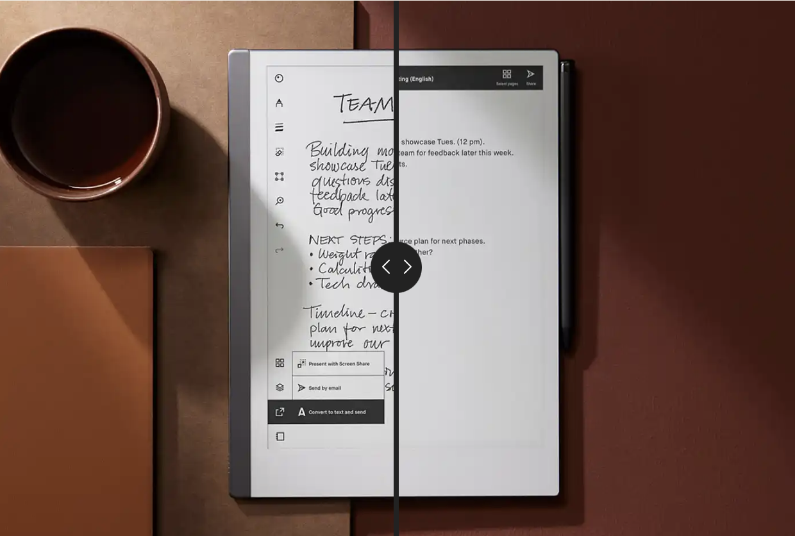
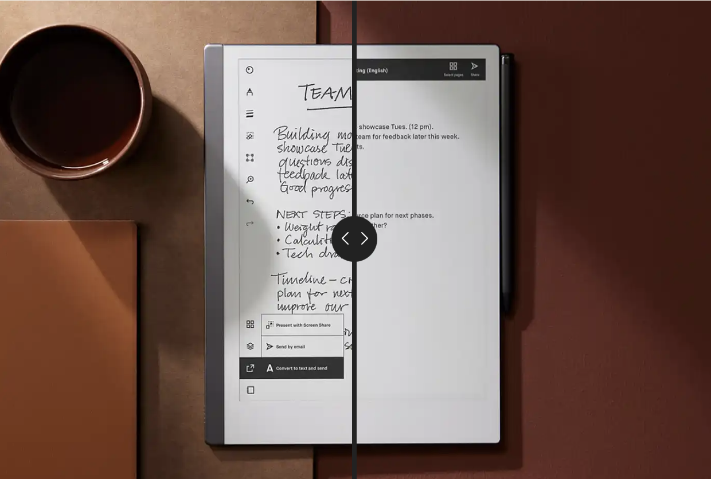

HERE WE INTRODUCE OURSELVES
Welcome to Freelance Solutions, your one-stop destination for all your freelance needs. Established in 2010, Freelance Solutions has been dedicated to connecting talented freelancers with businesses and individuals seeking top-notch services across various industries..
OUR MISSIONS
At Freelance Solutions, our mission is to empower freelancers to thrive in the gig economy while providing clients with access to a diverse pool of skilled professionals. We strive to foster a collaborative and supportive environment where freelancers can showcase their talents and clients can find the perfect match for their projects.
OUR VALUES
Integrity, innovation, and inclusivity are the core values that guide us in everything we do. We believe in conducting business with honesty and transparency, embracing creativity and adaptability, and celebrating the diversity of our global community of freelancers and clients.
WHAT SETS US APART
What sets Freelance Solutions apart is our commitment to both freelancers and clients. We understand the challenges faced by freelancers in finding meaningful work and by clients in finding reliable talent. That's why we've built a platform that prioritizes trust, transparency, and mutual success for all parties involved.
OUR PLATFORM
Freelance Solutions offers a user-friendly platform that connects freelancers with clients from around the world. Whether you're a freelance writer, designer, developer, marketer, or any other professional, our platform provides the tools and resources you need to showcase your skills, find new opportunities, and build your freelance career. For clients, our platform makes it easy to find the perfect freelancer for your project. With advanced search filters, portfolio viewing, and ratings and reviews, you can confidently hire the right talent for your specific needs, ensuring high-quality results every time.
OUR COMMITMENT TO QUALITY
Quality is paramount at Freelance Solutions. We believe in delivering exceptional service and results, whether you're a freelancer working on a project or a client seeking top-tier talent. Our dedicated support team is available to assist you every step of the way, ensuring a seamless and satisfying experience for all.
OUR VISSION FOR THE FUTURE
As we look ahead, we're excited about the possibilities that the freelance industry holds. We envision a future where freelancers have the freedom to pursue their passions and clients have access to the best talent from around the globe. With innovation, collaboration, and community at the forefront, we're committed to shaping the future of freelance work for the better.
Thank you for choosing Freelance Solutions. We're here to support you on your freelance journey, every step of the way.
 
